סבב אישור 1: בחירת דמויות + סגנון מודעה | רקע חלק בצבעי המותג | 2 קווי ייצור להשוואה
החופש ליהנות
שלב 1 - בחירת הדמויות (2 גברים, 2 נשים)
מכל קו ייצור נוצרו אותן 4 דמויות בדיוק, מאותו character bible - כדי להשוות מנוע מול מנוע. אחרי הבחירה ננעל את הדמות עם turnaround מלא (חזית, פרופיל, 3/4, גב) לעקביות בכל הקמפיין.
קו A - Nano Banana Pro (Gemini 3 Pro)
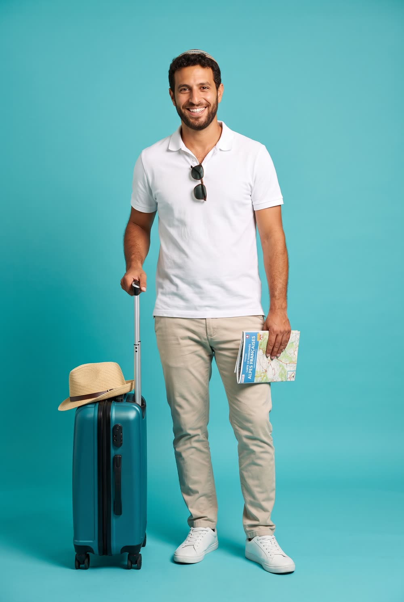
אורי, 32כיפה סרוגה, זקן מעוצב קצר, תלתלים כהים. פולו לבן וצ'ינו בז'. הבעל שכבר סגר הכל.
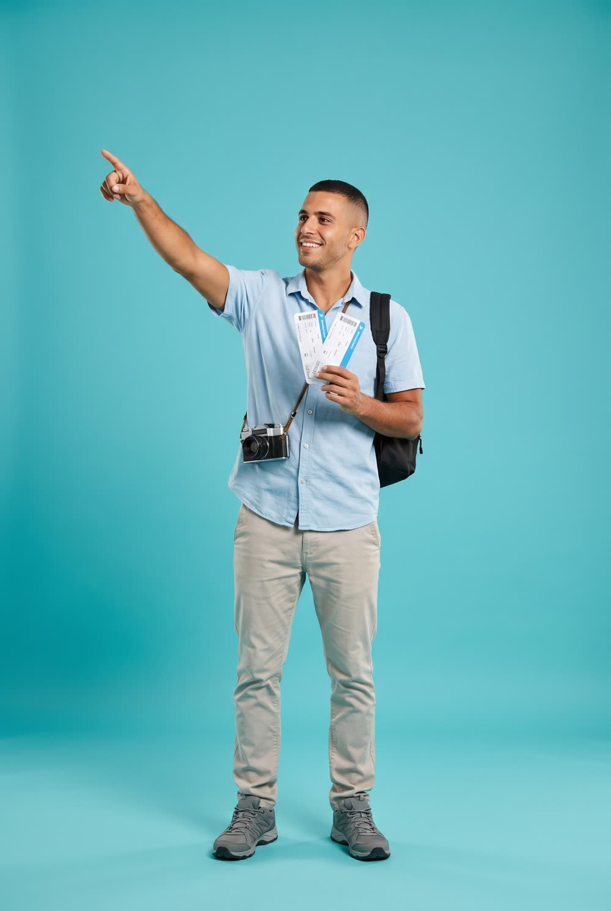
דניאל, 28מסורתי, זיפים קלים, מצלמת פילם על הצוואר. חולצת תכלת. האנרגיה של "טסים מחר".
אריה, 53אשכנזי בהיר, שיער מאפיר מסורק, משקפיים. מקלות הליכה על הכתף - צעיר ברוח.
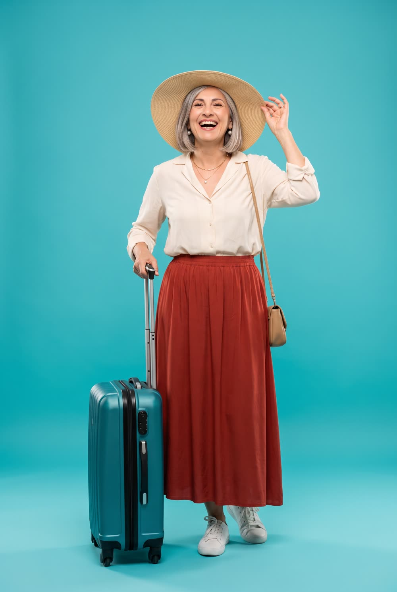
רחל, 55כובע קש אופנתי מעל קארה כסוף, עגילי פנינה. אלגנטית וקלילה, בלי כיסוי מלא.
אסתר, 52סרט רחב בטורקיז-זהב עם שיער גלוי. כיסוי חלקי ומעודן, קוראת את הדרכון בהתרגשות.
קו B - gpt-image-2
שלמה, 58אותו אפיון בדיוק.
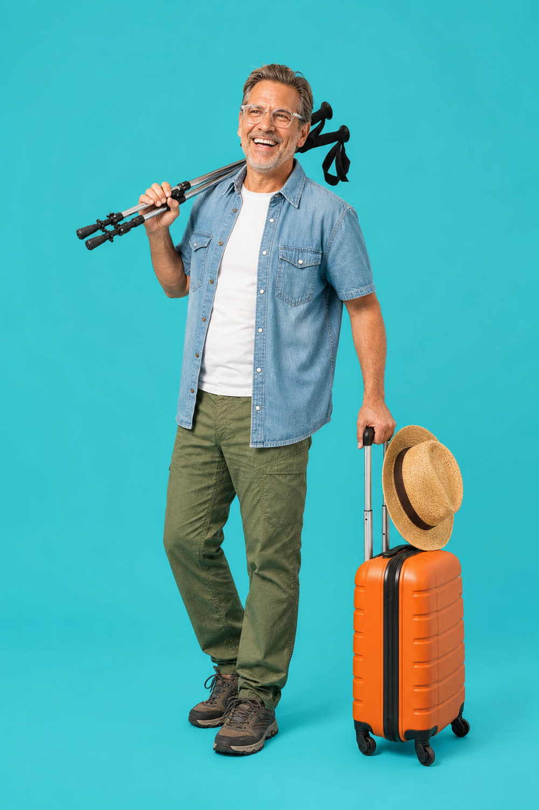
אריה, 53אותו אפיון בדיוק.
רחל, 55אותו אפיון בדיוק.
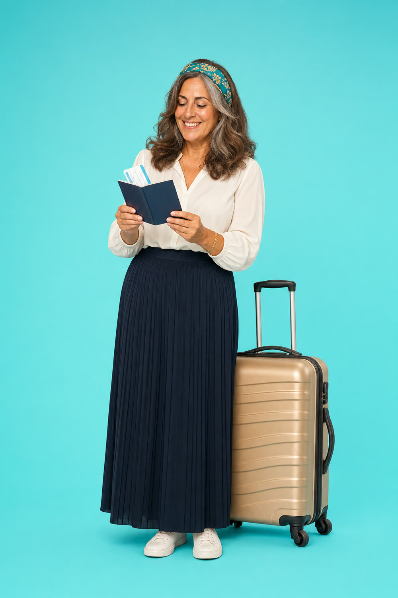
אסתר, 52אותו אפיון בדיוק.
שלב 2 - הדמיות מודעה (סימולציה)
ההדמיות מוצגות נקיות, בלי קופי - השטח העליון בכל תמונה שמור לכותרת. 10 כותרות מגיעות אחרי אישור הדמויות.
קו A - Nano Banana Pro
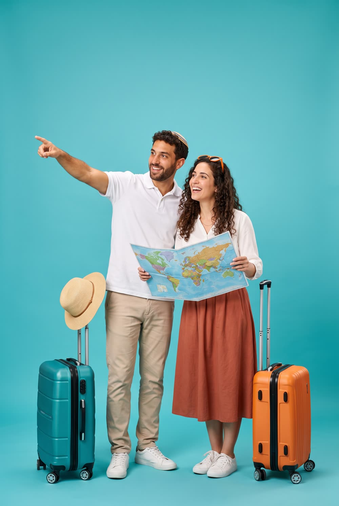
הדמיה 1 - רקע טורקיזהזוג מצביע אל הכותרת. שטח נקי למעלה לקופי. פורמט 2:3, נגזר גם ל-9:16 ו-1:1.
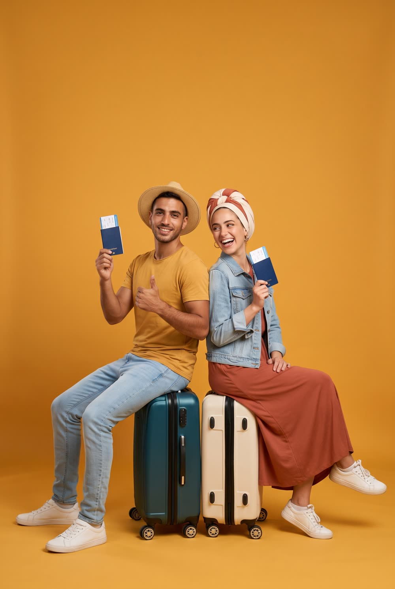
הדמיה 2 - רקע זהב חםישיבה גב אל גב על המזוודות, אנרגיית "כבר בדרך". וריאנט צבע שני מהפלטה.
קו B - gpt-image-2
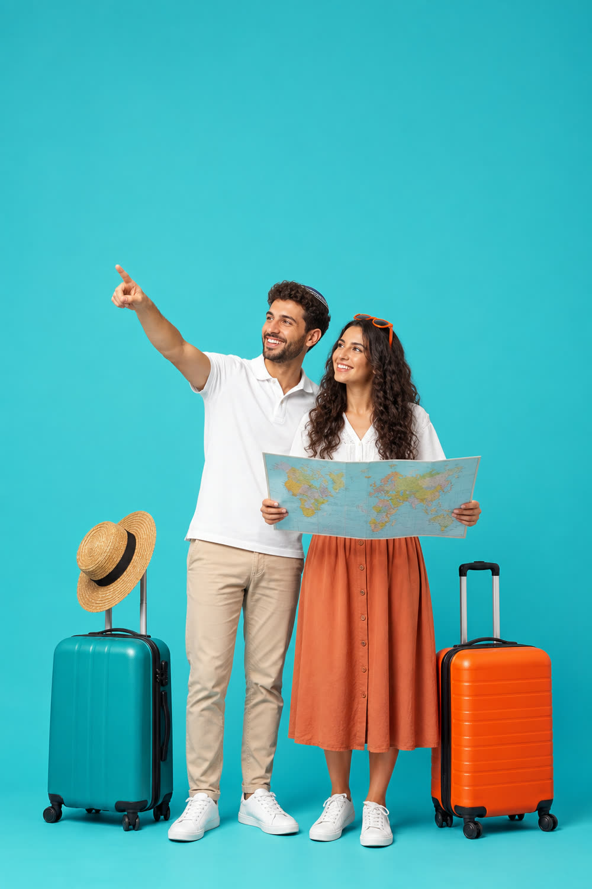
הדמיה 1 - רקע טורקיזאותו בריף בדיוק בקו B.
הדמיה 2 - רקע זהב חםאותו בריף בדיוק בקו B.
הדמיות נוספות - צעירים, מאוזן יותר
שתי הדמיות נוספות עם איזון בכיסויי הראש: נועה עם שיער גלוי, וגרסת "סרט" צעירה עם שיער נראה.
קו A - Nano Banana Pro
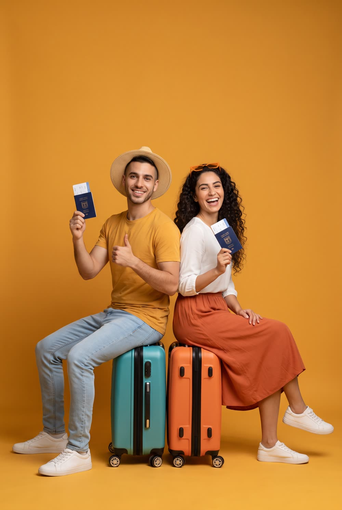
הדמיה 5 - דניאל ונועה על זהבשיער גלוי, אנרגיה צעירה, ישיבה על המזוודות.
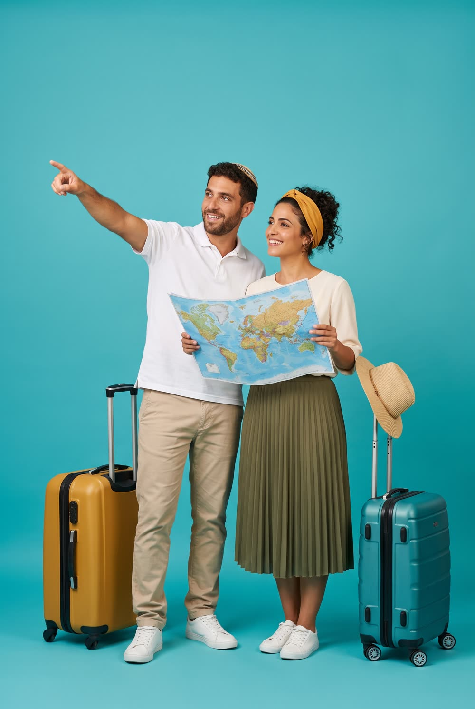
הדמיה 6 - אורי וגרסת "סרט" על טורקיזסרט חרדל רחב עם שיער גלוי - דרך האמצע בין גלוי למטפחת.
קו B - gpt-image-2
הדמיה 5 - קו Bאותו בריף בדיוק.
הדמיה 6 - קו Bאותו בריף בדיוק.
הדמיות מודעה - זוג 50+
אותם שני קונספטים, עם הזוג המבוגר: שלמה ורחל על הטורקיז, אריה ואסתר על הזהב. קופי דוגמה מותאם לקהל.
קו A - Nano Banana Pro
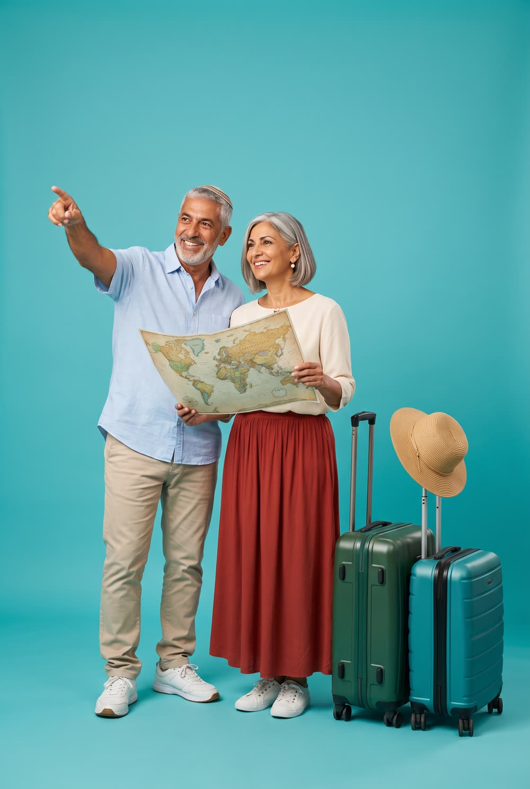
הדמיה 3 - זוג 50+ על טורקיזשלמה מצביע אל הכותרת, רחל עם המפה. אנרגיה של "עכשיו תורנו".
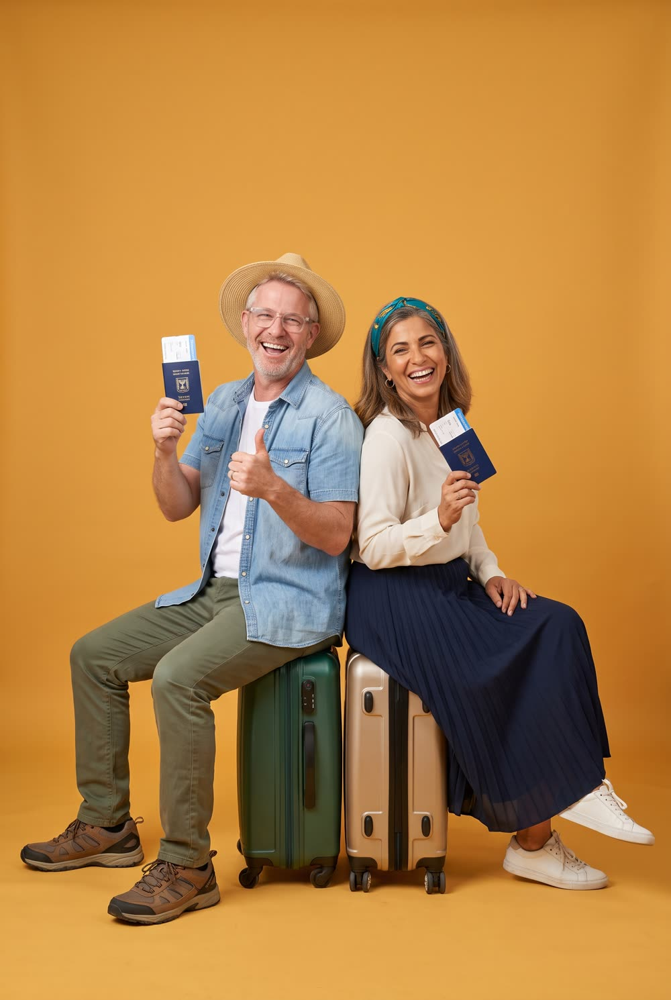
הדמיה 4 - זוג 50+ על זהבאריה ואסתר גב אל גב על המזוודות עם הדרכונים. חגיגי ומשוחרר.
קו B - gpt-image-2
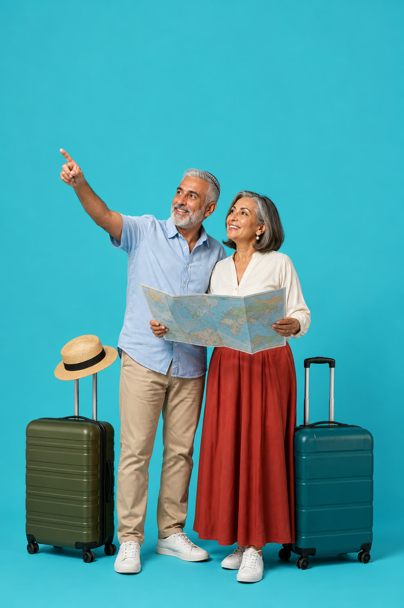
הדמיה 3 - זוג 50+ על טורקיזאותו בריף בדיוק בקו B.
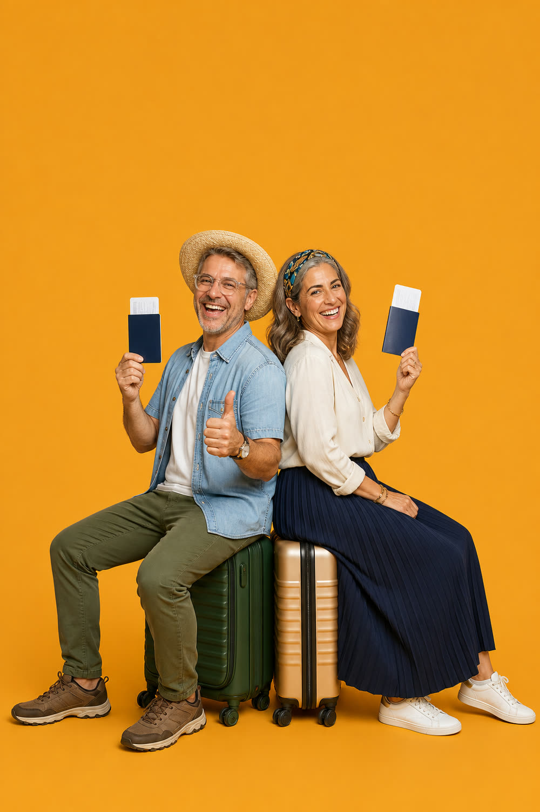
הדמיה 4 - זוג 50+ על זהבאותו בריף בדיוק בקו B.
מה מחליטים בסבב הזה:
1. איזה זוג ננעל לטסט (גבר + אישה, אפשר לערבב בין הקווים ברמת האפיון)
2. איזה קו ייצור מנצח - Nano Banana Pro או gpt-image-2
3. איזה כיוון הדמיה (טורקיז מצביעים / זהב יושבים) ממשיך לפיתוח
אחרי האישור: turnaround מלא לזוג הנבחר (כל הזוויות לנעילת דמות) + 10 כותרות קופי לתמונה.